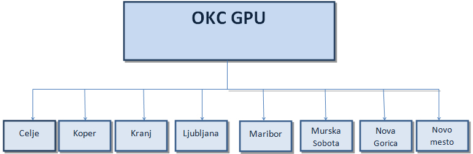

113 - INTERVENTNA ŠTEVILKA POLICIJE
Telefonska številka 113 je interventna številka policije in je namenjena klicem v sili v primerih kršitev javnega reda in miru, ob prometnih nesrečah, kaznivih dejanjih, naravnih in drugih nesrečah in v vseh preostalih primerih, ko je potrebno takojšnje ukrepanje policistov oziroma je nujna prisotnost policije.
Poslanstvo policije je pomoč ljudem ter skrb za njihovo varnost in varnost premoženja. Kadar potrebujemo pomoč, je ogrožena naša osebna varnost ali varnost našega premoženja, takrat lahko pokličemo na telefonsko številko 113, policisti pa bodo storili vse, da svoje poslanstvo uspešno opravijo. Seveda to velja tudi v primerih, ko so ogroženi drugi ali kdo pomoč potrebuje, pa zaradi okoliščin dogodka sam ne more poklicati interventne številke 113. Telefonska številka 113 ni enotna številka za policije v evropskih državah, tako kot je telefonska številka 112 za klic v sili, zato je priporočljivo, da se na potovanju ali bivanju v drugih državah najprej seznanimo z interventnimi številkami, med katerimi je tudi tista, ki nam zagotavlja pomoč policije.
OPERATIVNO - KOMUNIKACIJSKI CENTER
Vse klice na telefonsko številko 113 sprejemajo uslužbenci policije oziroma uslužbenci operativno-komunikacijskih centrov (v nadaljevanju OKC). Na državni ravni je ustanovljen OKC generalne policijske uprave, na regijski ravni pa so OKC ustanovljeni znotraj osmih policijskih uprav: Celje, Koper, Kranj, Ljubljana, Maribor, Murska Sobota, Nova Gorica in Novo mesto, kjer na regijski ravni skrbijo za varnost ljudi in njihovega premoženja. Kateri OKC bo sprejel naš klic, je odvisno od tega, kje stanujemo oziroma kje smo, ko kličemo na številko 113. Telefonski klic iz Domžal bodo sprejeli uslužbenci OKC policijske uprave Ljubljana, če pa kličemo iz izolske marine, bodo klic sprejeli v OKC policijske uprave Koper.

Zgodovinski pregled delovanja OKC
Zgodovina OKC sega v petdeseta leta prejšnjega stoletja in ima temelje v prvo ustanovljeni Stalni službi v tajništvu za notranje zadeve v Ljubljani. Ena od glavnih nalog je bila, da promovira takratno telefonsko številko milice, ki je bila 02. Na podlagi izkušenj tujih policij so sčasoma ustanovili Stalno službo kot posebno operativno enoto, v kateri so zaposlili izkušene policiste, ki so dobro poznali policijska pooblastila, postopke in območje, za katero so bili pristojni. Družbene spremembe in tehnološki razvoj so vplivali tudi na organizacijske in druge spremembe v takratni milici, ki so se odražale pri organizaciji in delu Stalne službe.
Največje spremembe so se zgodile po letu 1991. Z osamosvojitvijo Slovenije in s prehodom v demokratični politični sistem je tudi policija doživela vrsto sprememb. V okviru tega so – z novo organizacijo dela in s takrat najsodobnejšo računalniško tehnologijo – sektorje za stalna dežurstva na regijskem nivoju in oddelek za stalno dežurstvo na nivoju ministrstva za notranje zadeve preoblikovali v OKC kot samostojne organizacijske enote na ravni policijskih uprav in generalne policijske uprave v sestavi ministrstva za notranje zadeve. V tistem času je spremembo doživela tudi interventna telefonska številka 92, ki je bila leta 1993 prevezana iz policijskih postaj v regijske OKC in leta 1997 spremenjena v 113.
Bistvena pridobitev OKC je bila predvsem v pooblastilih, ki so jih dobili, in v moči samostojnega odločanja pri prvih operativnih ukrepih policije v trenutnih varnostnih razmerah. Pri tem gre predvsem za sprejemanje obvestil na interventno številko policije 113 ter za zagotovitev vodenja in usmerjanja policijskih sil pri reševanju vseh varnostnih dogodkov, kjer je potrebna takojšnja policijska intervencija, s čimer so bile druge strokovne službe policije razbremenjene tekočih operativnih nalog. S tako organizacijo dela in s pooblastili sta bila zagotovljena usklajeno delovanje uniformirane in kriminalistične policije pa tudi njena večja učinkovitost, ki se kaže v skrajševanju reakcijskega časa ob intervencijah.
OKC – naloge in pristojnosti:
- sprejema obvestila o varnostnih razmerah, pojavih, dogodkih in kaznivih dejanjih, predlaga, izvaja in odreja ustrezne ukrepe ter po potrebi o tem obvešča predstojnike operativnih oddelkov in druge uslužbence policijske uprave ter OKC generalne policijske uprave in OKC drugih policijskih uprav, javnost in policijske postaje na območju policijske uprave
- sprejema klice ljudi, ki potrebujejo pomoč policije
- spremlja, usmerja, odreja in usklajuje prve nujne ukrepe policistov ob kaznivih dejanjih, prometnih nesrečah, kršitvah javnega reda in miru, ob naravnih in drugih nesrečah ter ob drugih varnostnih pojavih
- po odredbi direktorja policijske uprave ali uslužbenca, ki ga pooblasti, organizira koncentracijo ljudi in materialno-tehničnih sredstev, potrebnih za opravljanje določenih nalog
- koordinira delo v varnostnih in drugih akcijah, ki so širšega pomena in se opravljajo na območju policijske uprave
- odloča o uporabi sredstev za prisilno ustavljanje motornih vozil
- vodi in spremlja komuniciranje po radijskih zvezah in neposredno nadzoruje izvajanje navodil o pravilni uporabi vseh vrst zvez
- sprejema in dostavlja zaupno službeno pošto
- varuje objekte policijskih uprav in zagotavlja opravljanje drugih varnostnih ukrepov
- preko sistema zvez spremlja prevoze nevarnih snovi, denarnih in drugih vrednosti ter druge prevoze v območju policijske uprave
- spremlja in ocenjuje strokovnost dela dežurnih policijskih postaj, jim zagotavlja strokovno pomoč in vodstvu policijskih postaj predlaga določene ukrepe za izboljšanje dela
SPREJEM TELEFONSKEGA KLICA
Skladno z določbami Zakona o elektronskih komunikacijah se vsi klici na interventno številko 113 snemajo na posebnih snemalnih napravah (registrofonih), kar uslužbencem OKC omogoča, da v določenih primerih ponovno poslušajo vsebino pogovora oziroma obvestila. Posnetke hranijo šest mesecev. Ob klicu na številko 113 se v OKC samodejno pridobijo podatki o telefonski številki in mestu prijavitelja. V geografsko-informacijskem sistemu se prikaže kraj prijavitelja tako za stacionarni kot mobilni telefon.
Kaj naj bi vsebovalo obvestilo o dogodku, ki zahteva intervencijo policistov:
- KAJ se je zgodilo (čim bolj natančen opis dogodka)
- KJE se je zgodilo (čim bolj natančna lokacija, točen naslov, če naslova ni ali ni znan, pa lokacijo določiti ob pomoči bližnjega objekta, ki ga bodo policisti lažje in hitreje našli)
- KOLIKO je poškodovanih ljudi, ki potrebujejo pomoč, in kakšne so njihove poškodbe
- KDO je povzročil oziroma storil nesrečo (ime in priimek, če to ni znano, pa čim bolj natančen opis osebe)
- OKOLIŠČINE dogodka, ki jih prijavitelj zaznava in so pomembne za postopke policistov (na primer ogroženost prijavitelja ali drugih ljudi, nevarne okoliščine, kot so požar, eksplozije, nesreče …)
- KDO kliče (prijavitelj lahko ostane anonimen s tem, da ne pove osebnih podatkov, ali od uslužbenca OKC zahteva, da ostane anonimen)
Prvi segment dela OKC je sprejemanje klicev na interventno številko policije 113, organiziranje in napotitev policistov na kraj nesreče, po potrebi pa tudi drugih interventnih služb (gasilcev, reševalcev ...); drugi je pomoč policistom s posredovanjem dodatnih informacij, ki so pomembne za strokovno in učinkovito ukrepanje, tretji pa je sprejem prvih ugotovitev policistov s kraja dogodka in nadaljnje ukrepanje skladno s prvimi ugotovitvami. Med pomembnejšimi ukrepi OKC je tudi obveščanje javnosti o dogodkih, ko je to potrebno zaradi varnosti oziroma nevarnih okoliščin, ki lahko ogrozijo varnost, ali ko policija naproša morebitne očividce za razjasnitev okoliščin posameznega dogodka.
Promoviranje interventne številko policije 113 se je v zadnjih letih obrestovalo, saj se povečuje delež klicev zaradi interventnih dogodkov, ki zahtevajo takojšen odziv policistov (intervencijo), in se zmanjšuje delež klicev v zvezi z dogodki, ki niso interventni in ne zahtevajo takojšnjega odziva. Za pridobitev različnih informacij ali potrebe po komunikaciji z določenim policistom pokličemo telefonske številke policijskih uprav ali policijskih postaj, ki so objavljene na spletnih straneh policije ali v telefonskih imenikih.
Na ta način se razbremenjuje interventna številka 113, ki jo lahko v danem trenutku nekdo nujno potrebuje. Odzivnost policistov na interventne klice ocenjujejo s spremljanjem in analizo reakcijskega časa. Reakcijski čas je tisti, ki preteče od klica na interventno številko 113, zvonjenja telefona, prevzema klica, pogovora s klicateljem do odločitve o napotitvi policistov in prihoda prvega policista na kraj dogodka.
S takšnimi analizami vodstva policijskih uprav in policijskih postaj lažje načrtujejo in organizirajo delo policistov na terenu ter njihovo ukrepanje ob interventnih dogodkih. V policiji se zavedajo, da je hitro ukrepanje bistveno, saj omogoča učinkovito delo policistov, s tem pa zagotavljanje varnosti ljudi in njihovega premoženja. Zloraba klica na interventno številko 113 je kazniva, vsako nepotrebno obremenjevanje interventne številke 113 pomeni tudi zmanjševanje operativne učinkovitosti policistov v primerih, ko ljudje potrebujejo pomoč.